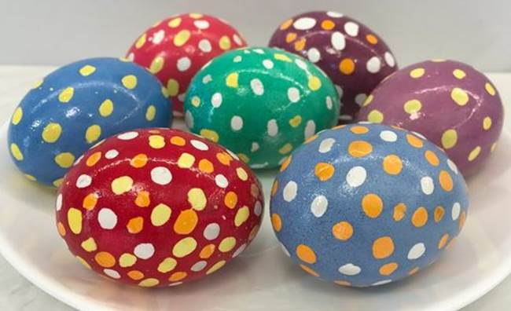
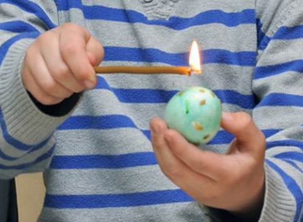
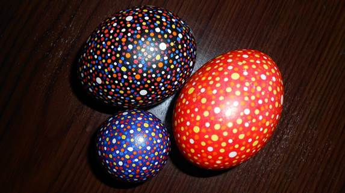
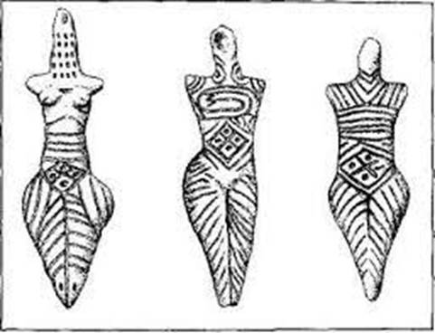
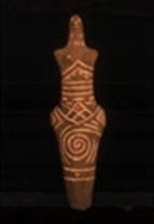
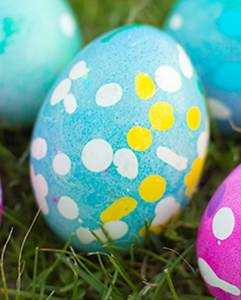

ЛАБОРАТОРНО-ПРАКТИЧНА РОБОТА
Тема: «Писанки-крапанки»
Мета: засвоєння знань про символ «крапки», його значення; формування вмінь нанесення крапок на поверхню яйця різними способами.
Матеріали та інструменти: простий олівець, видутки білих курячих яєць, анілінові фарби, пластикові ложки (для кожної фарби), серветки паперові, м’які бавовняні ганчірки (для кожної фарби), оцет, писачок, віск бджолиний, свічка воскова, свічка парафінова, сірники.
Порядок виконання роботи:
- Ознайомитись з теоретичними відомостями роботи.
- Виконати вправи з нанесення крапок на поверхню яйця різними способами: за допомогою свічки, «мачки» та писачка.
- Виготовити крапанки різними способами.
Теоретичні відомості:
Крапанка – один із видів орнаментованих Великодніх яєць. Малюнок на поверхні яйця утворений крапками різного (чи одного) кольору і розміщення та різної форми (мал. 1).

Мал. 1. Крапанки.
Ці яєчка ще називають капанками – від слова «капати»; крапки можна наносити без спеціальних інструментів, «капаючи» запаленою свічкою (мал. 2).

Мал. 2. Технологія виготовлення капанки за допомогою свічки.
Для нанесення крапок різної форми, що розміщені в певному порядку, користуються так званими «мачками» – квачиками різної форми, виготовленими з лляної ганчірочки, закріпленої на паличці. «Мачку» вмочують у розігрітий віск і наносять крапку на шкаралупу. Малювати крапки можна також і спеціальним інструментом для писанок «писачком» (мал. 3).

Мал. 3. Крапанки, виготовлені за допомогою писачка.
Крапки на крапанках так само, як і на писанках, означають зерно, що має прорости. В цьому символі закладена ідея плодючості полів (а також людей). Під час розкопок поселень Трипільської археологічної культури знайдені фігурки богині плодючості Рожаниці. У складі глини, з якої ліпилась фігурка, було зерно або борошно. А на животі жіночої фігурки малювався ромб (символ поля) і «втискувались» в нього чотири зернинки (мал. 4).
 
Мал. 4. Фігурки богині плодючості Рожаниці.
Розглянемо для прикладу крапанку, на якій жовті крапки розкидані по синьому полю і символічно показують зв'язок двох першооснов світу – синього моря (води) та золотого піску (сонячного світла) (мал. 5).

Мал. 5. Крапанка, виготовлена за допомогою свічки.
В усіх міфологіях світу при початку світотворення стоять вогонь і вода. Ідея створення світу відображена і в давній українській колядці:
Ой, як то ще було з Нащада Світа. Радуйся! Ой. радуйтесь, люде, , Світ Божий засвітився! Ой, як ще не було ні Неба, ні Землі, Радуйся і...
А що тільки й було лиш Синєє Море. А посеред Моря Золотая іва, А посеред Моря Всесвятеє Древо, А на тому Древі Три Синії Птиці. Три Синії Птиці та й радоньку радять. Та й радоньку радять, як Світ оснувати. Та урнули Птахи в Світові Глибини. Та й винесли Птахи Золотий Камінчик. Став із того каменю Ясен Панич – Сонце! Ще й урнули Птахи в Світові Глибини. Та й винесли Птахи Світел Срібен Камінь. Стала з того каменю Світла Панна Місяць! Ще урнули Птахи в Світові Гпибини, Та й внесли Птахи Золотий Пісочок, Стали із Пісочку Дрібнії Звіздочки!
Як бачимо, «золотий пісочок» – іде також і зорі на небі. За іншими легендами, крапки на писанках – то яйця зозулі. Зозуля – передвісниця весни, віщунка долі, символ кохання, багатства. В образі зозулі втілена Велика Богиня-Мати. За давнім повір'ям зозуля першою відмикає і замикає золотими ключами Вирій.
За християнськими легендами крапки на писанках-крапанках – це сльози Божої Матері, що заплакала, почувши звістку про розіп'ятого Ісуса Христа.
Контрольні питання:
- Охарактеризуйте значення символу «крапки».
- Що за християнськими легендами означають крапки на писанках-крапанках?